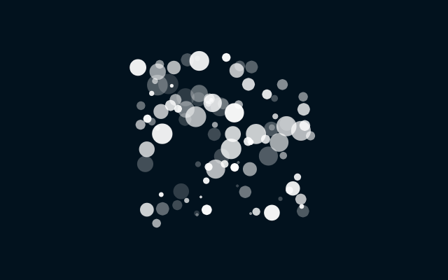

パーティクルの大きさと透明度を変更する
実行例
 実行結果を見る
ソースコード
TypeScript
解説/アルゴリズム
パーティクルの見栄えを良くするために、一つ一つの大きさや透明度を変更してみましょう。
export type Particle = {
x: number;
y: number;
vx: number;
vy: number;
radius: number;
// 透明度の情報を追加する
opacity: number;
};
export function init(
x: number,
y: number,
vx: number,
vy: number,
radius: number,
opacity: number
): Particle {
return { x, y, vx, vy, radius, opacity };
}
export function update(p: Particle): void {
p.x += p.vx;
p.y += p.vy;
}
Particle に半径と透明度の情報を持たせるように調整します。
p.draw = () => {
p.background(color.background);
p.noStroke();
particles.forEach((particle) => {
update(particle);
p.fill(color.fill, particle.opacity);
p.circle(particle.x, particle.y, particle.radius);
});
};
透明度や大きさの情報をもとに描画を行います。